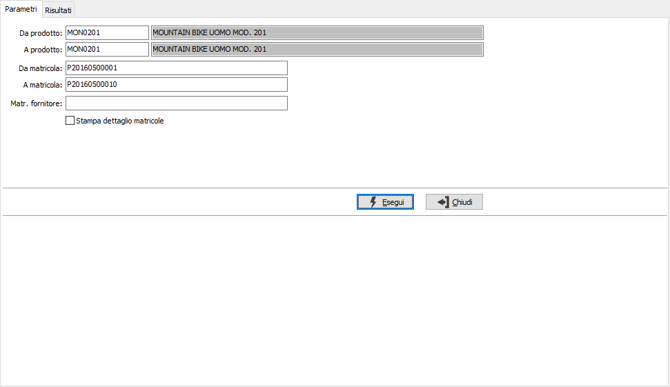
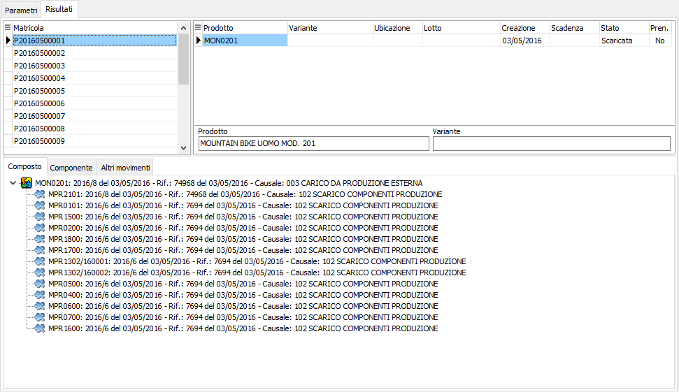
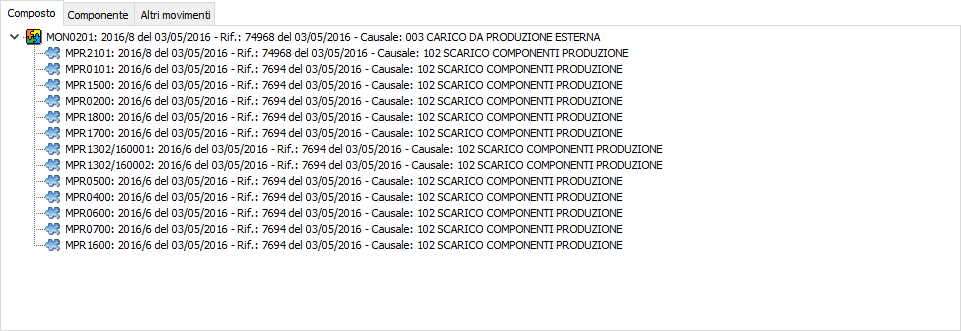
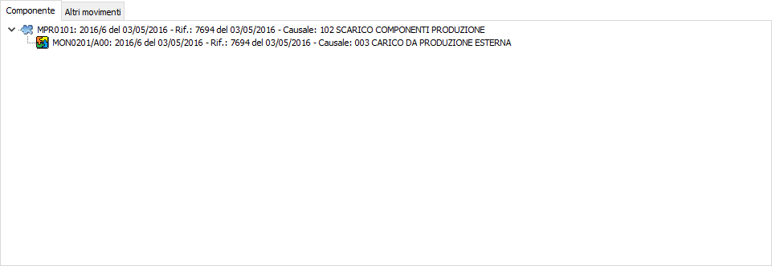
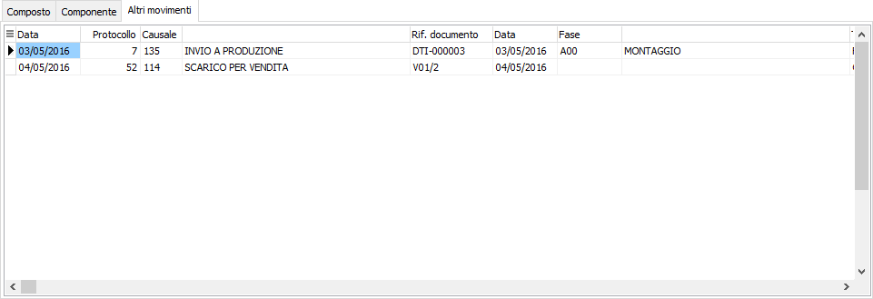
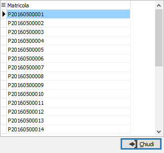

Tracciabilità matricole
La procedura consente di analizzare approfonditamente l’utilizzo di una specifica matricola; vengono analizzate le seguenti casistiche:
ricercare i componenti utilizzati per la produzione di una matricola associata ad un prodotto con scheda tecnica, individuando le matricole dei singoli componenti ad ogni livello di esplosione della scheda tecnica;
ricercare i prodotti che utilizzano una specifica matricola come componente a qualsiasi livello della scheda tecnica questa venga indicata;
ricercare i movimenti generici di trasferimento, rettifica e quanto altro non collegato direttamente alla produzione.
La prima pagina consente di specificare i parametri per la selezione dei prodotti/matricola, è possibile specificare la singola matricola del fornitore per restringere la selezione; la casella "Stampa dettaglio matricole" è relativa alla possibilità di elencare, in fase di stampa, le singole matricole legate ad ogni movimentazione.
L’analisi viene effettuata a video tramite delle strutture ad albero i cui rami ben evidenziano la composizione dei livelli della scheda tecnica ed è disponibile anche un report a stampa.

La pagina dei "Risultati" è suddivisa in due parti: la parte superiore con a sinistra le matricole selezionate in base ai criteri espressi; per ogni matricola sulla destra vengono mostrati i prodotti associati e per ogni prodotto vengono elaborati i dati visualizzati nelle pagine sottostanti. Utilizzando i tasti funzione della toolbar (anteprima di stampa o stampa), si avviano le relative funzioni.
Per ogni matricola/prodotto nella sezione inferiore vengono elaborati i dati relativi alla movimentazione collegata mostrati in tre pagine distinte; se una pagina non contiene informazioni non viene mostrata.

La pagina "Composto" mostra i componenti utilizzati per la produzione della matricola associata al prodotto; viene presentato l'elenco dei componenti movimentati, a livelli, riportando le informazioni relative al singolo movimento.

La pagina "Componenti" mostra i prodotti che utilizzano la specifica matricola del prodotto come componente a qualsiasi livello; viene presentato l'elenco dei composti movimentati, a livelli, riportando le informazioni relative al singolo movimento.

La pagina "Altri movimenti" mostra i movimenti generici di trasferimento, rettifica e quanto altro non collegato direttamente alla produzione, con il doppio clic del mousse sul singolo movimento si accede alla manutenzione.


Dalle pagine "Composto" e "Componente" è possibile utilizzare il menù del tasto destro del mouse per richiamare il menù da cui è possibile accedere al movimento oppure vedere l'elenco delle matricole eventualmente assegnate al singolo elemento su cui si è posizionati.